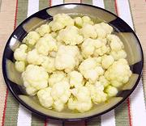

|
Cauliflower a la GrecqueItaly - Cavolfiore del Pireo | ||||
| Serves: Effort: Sched: DoAhead: |
5 salad ** 1-3/4 hrs Best |
A light, moderately tart and attractive vegetable salad or appetizer to break the weight of heavier dishes. It can be made even several days ahead and refrigerated. | |||
|
|
1-1/2 ------ 2 1/4 1/2 2 5 2-1/2 ------ |
# --- cl c c c --- |
Cauliflower -- Dressing Garlic Olive Oil ExtV Lemon Juice Bay Leaves Peppercorns Water ----------- |
Make - (1-3/4+ hr - 15 min work))
|